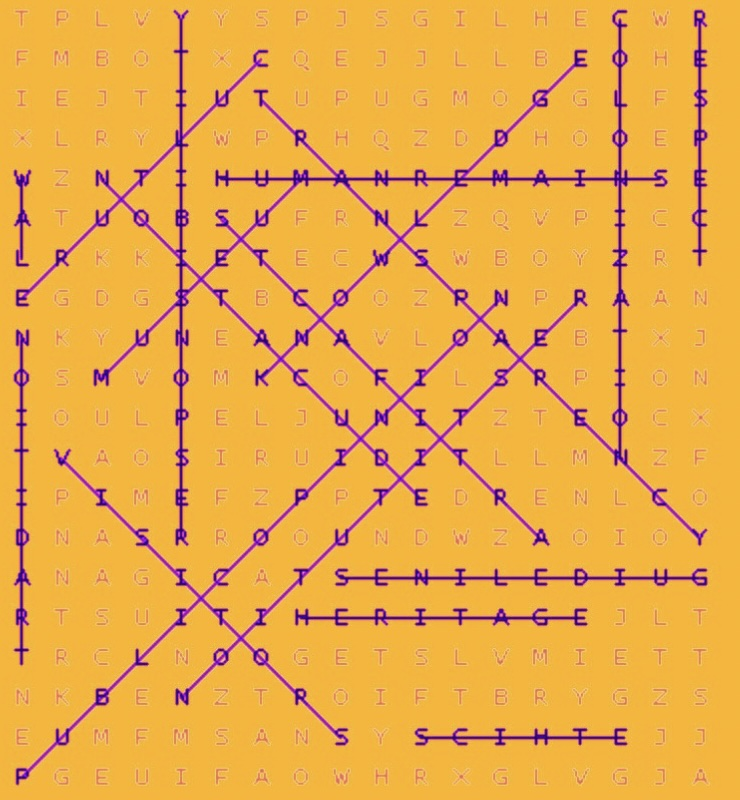

← Back to Home
Game Answers
1. Word Search:

2. Crossword Answers:

3. Connections:
Stakeholders: University, Museum, Investors, Director
What to do with Ancestral Artefacts: Repatriation, Restitution, Acknowledge, Amend
Functions of a Museum: Education, Preservation, Culture, History
When Do You Need an Ethics Board?: Human remains, Colonial artefacts, Sacred objects, Guidance